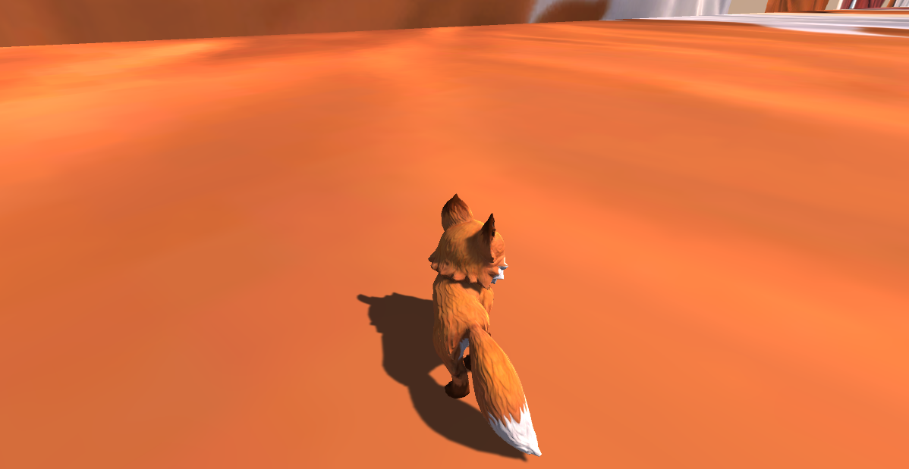

Projects
Metaballs_Multithreaded | Dark Acropolis | Regiment AI | Quadrapedal Character Controller | OpenGL Graphics Engine | Attack on Titan TGTG
Quadrupedal Character Controller
My goal for this project was to make a quadrupedal character controller that felt good and looked realistic. Since I was making a quardrapedal CC I decided to do it in Unity so I could do it easily in 3D.
When initially tackling this project I sought to make it so that the player controller moved the front of the body, and the back of the body would follow. This worked well at the start but when trying to apply it to a character model, I found that my setup didn't really work and so I decided to take what I learned and try again from a different approach.
I started by laying the ground work like basic movement and I made so to start development on a character model already. I then tried to make the movement mimic the movement of a quadraped more and looked at some videos of horses and dogs for reference.
Eventually I got it feeling good but then I needed to make it look good. Eventually after getting some third opinions I landed on using animation masks to cut up animations. By doing this I made it so the user could stop mid turn and stay turned. Walking forward would then straighten out the character and while moving you a little in the direction you were already facing.


This project was interesting to work on because it was a new kind of challenge because instead of the projects I was more used to where you make a program to do something with quite a-bit of code, I was making something that wasn't that much code, but I had to make it the best quality I could.